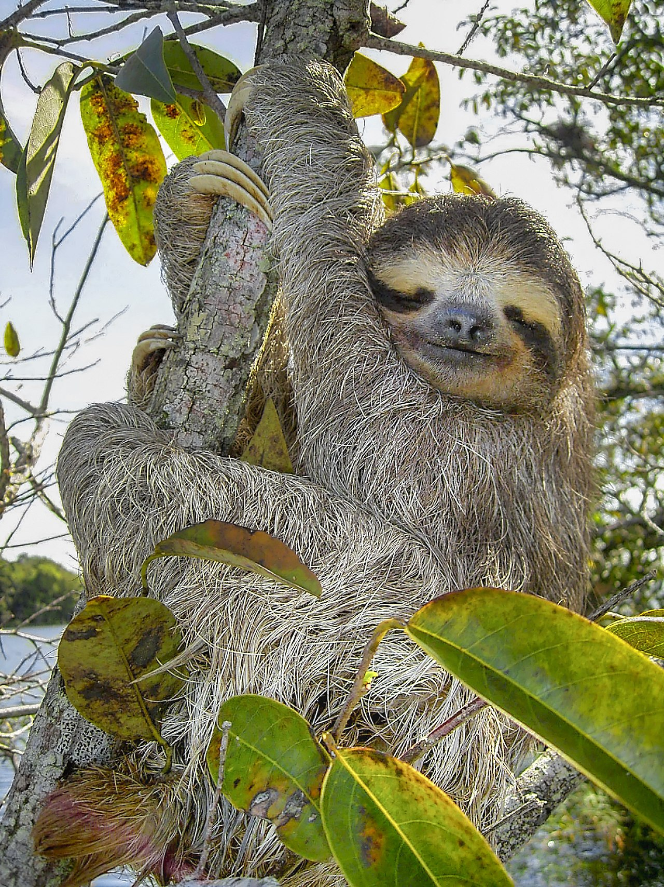
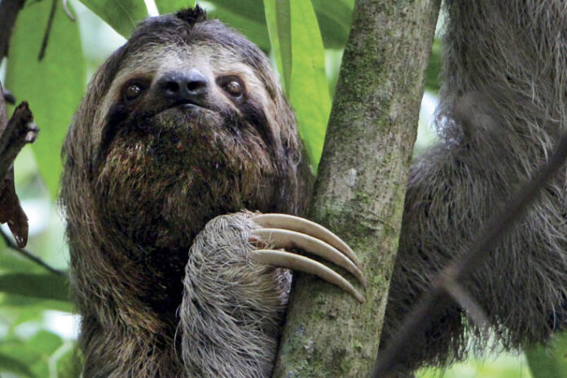

Los folívoros (Folivora) o filófagos (Phyllophaga) son un suborden de mamíferos placentarios del orden Pilosa, comúnmente conocidos como perezosos o pereza. Son animales neotropicales de variado tamaño endémicos de las selvas húmedas de América Central y América del Sur. Las especies actuales se pueden clasificar en dos géneros: los perezosos de tres dedos (Bradypus, Bradypodidae) y los perezosos de dos dedos (Choloepus, Choloepodidae), pero se conocen más de 50 géneros.
Características
- Altura: entre 40 y 75 centímetros
- Clasificación: Mamífero
- Dieta: Herbívoro
- Hábitat: Selvas tropicales
- Vida promedio: 10 años
Imágenes
